COMPINT · curso 3
1. Introducción a la Compilación · COMPINT
El problema de la traducción de código no es nuevo, surge desde la programación del primer ordenador.
1.1 Lenguajes de Programación
Un lenguaje de programación es la herramienta mediante la cual los humanos dan instrucciones a las máquinas. Según su nivel de abstracción:
-
Lenguajes Máquina: son específicos de cada ordenador. Consisten en secuencias de unos y ceros. Son inteligibles para el humano promedio pero nativos para le hardware
-
Lenguajes Ensamblador: también específicos de cada ordenador, pero un paso más arriba. Proporcionan nombres simbólicos para:
- Instrucciones sencillas
- Posiciones de memoria
-
Lenguajes de Alto Nivel: Son independientes de la máquina. Permiten abstracciones complejas como estructuras de control, variables con tipo, procedimientos, recursividad y tipos abstractos de datos.
-
Lenguajes Orientados a Problemas: diseñado para dominios específicos. Su objetivo es reducir el tiempo de programación, mantenimiento y depuración.
1.2 Procesadores de Lenguajes
Un procesador de lenguaje es un software encargado de procesar o traducir un programa fuente.
1.2.1 El Compilador
Es un programa que traduce un programa escrito en un lenguaje fuente a un programa equivalente escrito en un lenguaje objeto.
- Genera un programa objeto (generalmente es lenguaje máquina). El lenguaje objeto es un lenguaje máquina.
- Informa de la presencia de errores en todo el código fuente.
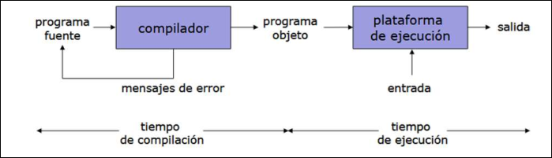
- Se compila una vez, se ejecuta n veces. - La ejecución es **rápida** - La **gestión de errores abarca todo el programa** - Mejor adaptados a entornos de **producción** - *Ejemplos:* FORTRAN, C, PASCAL ...1.2.2 El Intérprete
A diferencia del compilador, el intérprete no produce un programa objeto. Aparenta ejecutar directamente cada instrucción del programa fuente utilizando las entradas proporcionadas por el usuario. Traduce y ejecuta instrucción por instrucción.
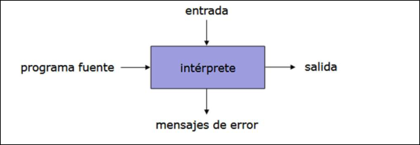
- Se **traduce cada vez** que se ejecuta - Necesita **menos memoria** - Se permite la **interacción** con el código en **tiempo de ejecución** - Mejor adaptados a entornos de **desarrollo y experimentación** - *Ejemplos:* BASIC, LISP, PROLOG ...1.2.3 Enfoques Híbridos y Modernos
La distinción estricta entre compilador e intérprete se desdibuja en los lenguajes modernos para aprovechar lo mejor de ambos mundos.
Compilador - Intérprete
El proceso se divide en dos fases:
- Compilación a Lenguaje Intermedio: El código fuente se compila a un formato intermedio, no a código máquina real.
- Interpretación (Máquina Virtual): Una máquina virtual interpreta ese código intermedio en el ordenador destino.
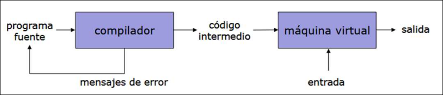
- Ejemplo: Java. El compilador genera bytecode, que luego es interpretado por la JVM (Java Virtual Machine).
Compiladores JIT (Just-In-Time)
Para mejorar la eficiencia de los sistemas basados en máquinas virtuales o intérpretes, se utilizan los compiladores JIT.
- Funcionamiento: compilan en tiempo de ejecución fragmentos del código intermedio directamente a código objeto.
- Ventaja: mejora la eficiencia de los intérpretes y en ocasiones la de los propios compiladores.
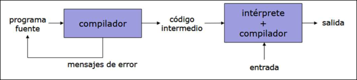
- Ejemplos: JAVA, PHP, PYTHON ...
1.3 El proceso de traducción
Esta imagen muestra una cadena clásica de traducción de un programa, típica de lenguajes como C/C++. Algunos compiladores pueden generar el código máquina directamente.
Partimos de:
#include <stdio.h>
int main() {
printf("Hola\n");
return 0;
}
Este archivo todavía no se puede compilar porque tiene cosas como #include <stdio.h> por ello pasa al preprocesador. Después pasa al compilador que lo traduce a ensamblador
mov eax, 0
call printf
ret
El compilador se centra en traducir optimizar el programa. Posteriomente el ensamblador convierte ese ensamblador en código máquina relocalizable. Que sea relocalizable significa que todavía no se sabe exactamente en qué posición de memoria estará cada cosa cuando el programa final se ejecute. Por ejemplo si el programa llama a :
printf("Hola\n");
El código usa printf pero printf no está descrito dentro del archivo, está en una biblioteca externa. Entonces el ensamblador puede decir, aquí hay una llamada a printf pero todavía no sé la dirección exacta de printf. Por eso genera un archivo objeto, por ejemplo: main.o.
Y por último el enlazodr junta el código con otros códigos necesarios:
main.o
+ biblioteca estándar de C
+ código de arranque del programa
+ otras bibliotecas
= ejecutable final
Nota
El lenguaje ensamblador es una forma textual y más legible de escribir instrucciones de máquina.
El ensamblador también es un programa que traduce lenguaje ensamblador a código máquina. En Linux, el ensamblador típico se llama as.
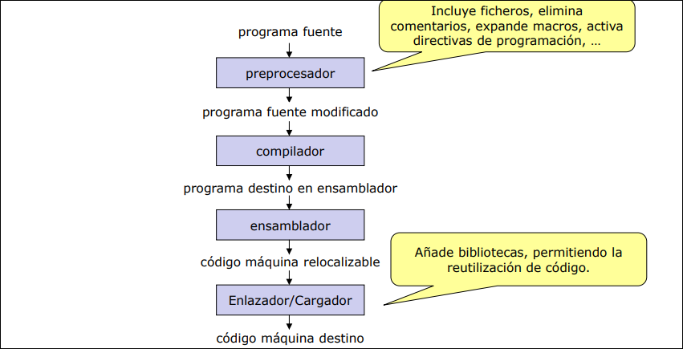
1.4 Estructura Interna de un Compilador
La siguiente imagen es una ampliación de la fase compilador de la imagen anterior.
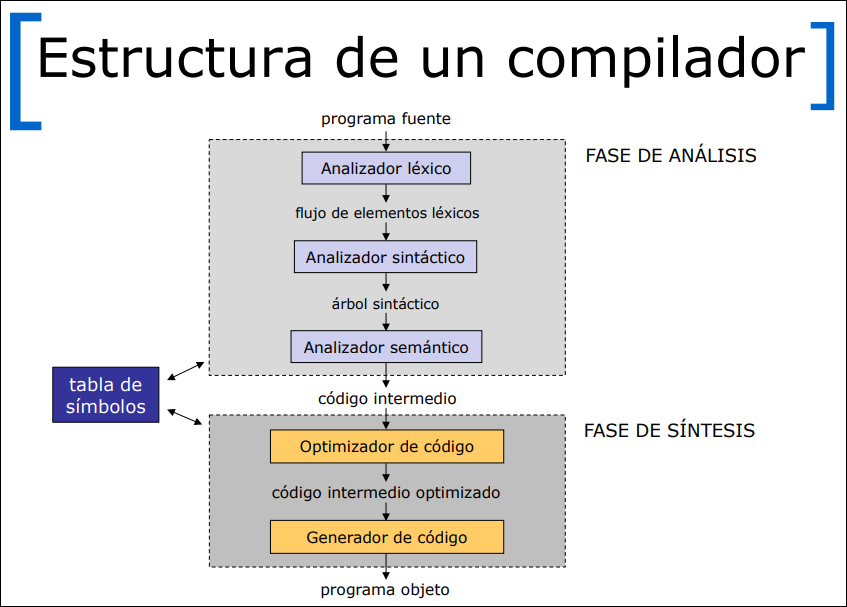
1.4.1 Estrategia para diseñar compiladores
Si tenemos
El código intermedio es una representación del programa que no es exactamente el lenguaje original, pero tampoco es todavía código máquina de un ordenador concreto. Si partimos de:
int x = 2 + 3;
int y = x * 4;
Se convertiría por ejemplo en:
t1 = 2 + 3
x = t1
t2 = x * 4
y = t2
No es C pero tampoco es ensamblador x86, ARM o RISC-V. Esto sirve como un puente universal entre muchos lenguajes y muchas máquinas. Sin esto si tienes
Plataforma: destino donde se va a ejecutar el programa.
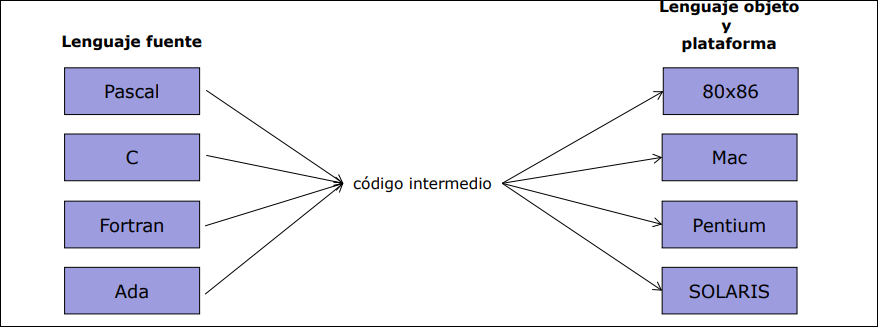
1.4.2 Analizador Léxico
Lee el flujo de caracteres del programa fuente y los agrupa en componentes léxicos. Cada componente léxico produce como salida un token de la forma <nombre, valor-atributo>, que pasa a la fase siguiente.
- Ejemplo: Identifica
posicion, el símbolo=, el identificadorinicial, etc. - Salida: Un flujo de tokens.
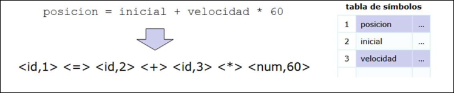
1.4.3 Analizador Sintáctico
Recibe los tokens y crea una representación intermedia jerárquica en forma del árbol que describe la estructura gramatical del flujo de tokens.
- Árbol sintáctico: cada nodo interior es una operación y los hijos son los argumentos.
- Ejemplo: Crea un árbol donde
*(multiplicación) es hijo de+(suma), respetando la precedencia matemática.
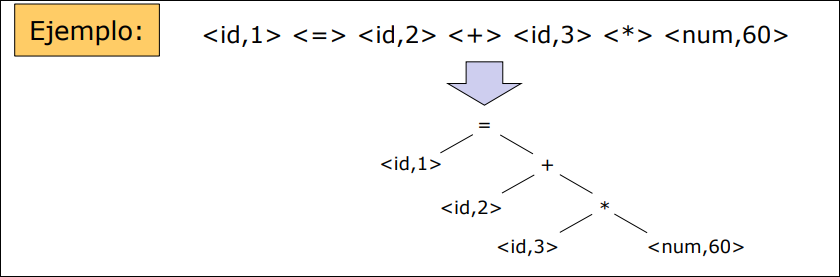
1.4.4 Analizador Semántico
Revisa el árbol sintáctico y la tabla de símbolos para comprobar la consistencia semántica. Su tarea principal es la verificación de tipos.
- Coerción: si el lenguaje lo permite, el analizador puede convertir tipos automáticamente.
- Ejemplo: En
velocidad * 60, sivelocidades un número real y60es entero, el analizador convierte el60a real (entareal(60)) para que la operación sea válida.
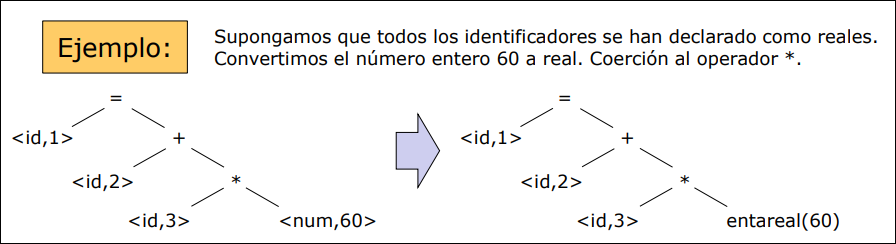
1.4.5 Generador de Código Intermedio
Traduce el árbol a un código para una máquina abstracta. Debe ser fácil de producir y traducir a lenguaje objeto. Una representación muy común del código intermedio es el código de 3 direcciones: una secuencia de instrucciones que tienen como máximo 3 operandos.
temp1 = entareal(60)
temp2 = id3 * temp1
temp3 = id2 + temp2
id1 = temp3
1.4.6 Optimizador de Código
Intenta mejorar el código intermedio para que sea más rápido o consuma menos recursos, sin cambiar el resultado.
- Ejemplo: El optimizador se da cuenta de que la conversión de
60a60.0se puede hacer de una vez durante la compilación, ahorrando una instrucción:
temp1 = id3 * 60.0 (Ahorramos la instrucción de conversión)
id1 = id2 + temp1
1.4.7 Generador de Código
Traduce el código intermedio optimizado al lenguaje destino (código máquina o ensamblador). Aquí se asignan los registros de memoria reales de la CPU.
- Ejemplo:
LDF R2, id3 ; Cargar id3 en Registro 2
MULF R2, R2, #60.0 ; Multiplicar R2 por 60.0
LDF R1, id2 ; Cargar id2 en Registro 1
ADDF R1, R1, R2 ; Sumar R1 y R2
STF id1, R1 ; Guardar resultado en id1
1.4.8 La Tabla de Símbolos
Registra nos nombres de los elementos del programa fuente (variables y procedimientos), junto con sus atributos, que contienen información de utilidad sobre cada nombre.
- Atributos de variables: dirección de almacenamiento, tipo, dimensión, alcance, precisión, si se ha declarado, si se ha inicializado, etc.
- Atributos de procedimientos: número y tipos de sus argumentos, modo de paso de cada argumento (valor o referencia), tipo devuelto, recursividad, etc.
1.5 Construcción de Compiladores
Para definir correctamente la construcción de un compilador, es imprescindible identificar tres lenguajes distintos:
- El lenguaje fuente: El lenguaje que el compilador traduce (entrada).
- El lenguaje objeto: El lenguaje al que se traduce y la plataforma donde se ejecutará (salida).
- El lenguaje de implementación: El lenguaje en el que está escrito el propio programa compilador.
Ejemplo: Si tenemos un ejecutable en un PC que traduce Pascal a código máquina:
- Fuente: Pascal.
- Objeto: Código máquina del PC.
- Implementación: Código máquina del PC (porque ya es un ejecutable).
1.5.1 Diagramas de Tombstone
Son una herramienta visual que facilita el diseño y la comprensión de cómo interactúan compiladores, intérpretes y máquinas. Hay cuatro tipos de piezas.
-
Compiladores (Forma de T): Representan la traducción de un lenguaje fuente a un lenguaje objeto o destino. En este diagrama, “Objeto” no se refiere necesariamente a un archivo
.o; se refiere al resultado de la traducción, que puede ser ensamblador, código máquina, bytecode, código intermedio u otro lenguaje destino. En el caso concreto de C, un archivo.osuele contener código máquina relocalizable que todavía debe pasar por el enlazador.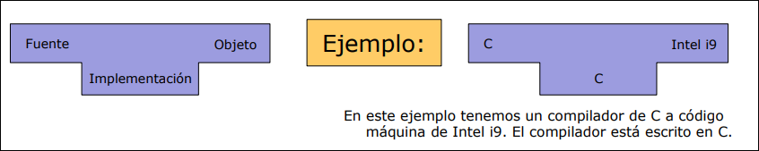
-
Programas: Representan un programa
escrito en un lenguaje . 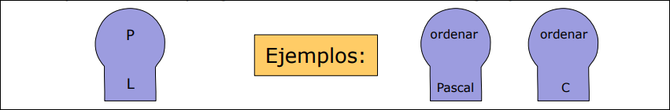
-
Máquinas: Representan el hardware o sistema operativo base. Cuando ponen
es máquina o plataforma. 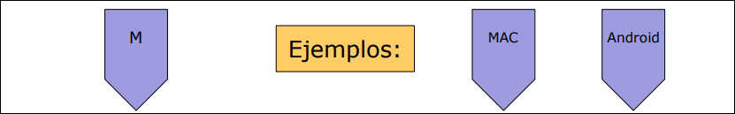
-
Intérpretes: Representa el intérprete del lenguaje
escrito en . 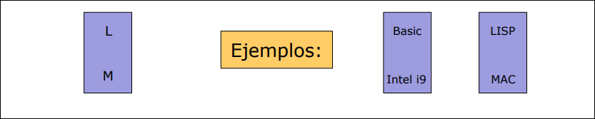
1.5.2 Reglas de Unión de Diagramas
La regla de oro para conectar estas piezas es: Dos diagramas se pueden unir si en la unión los lenguajes son iguales.
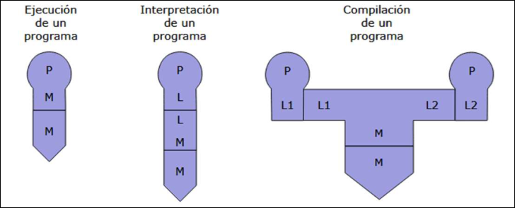
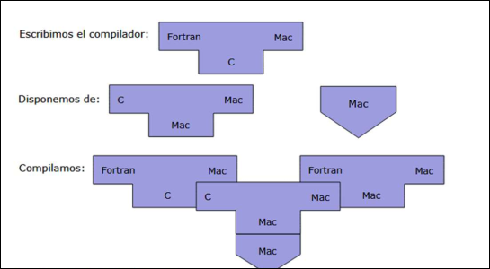
1.5.3 Estrategias Avanzadas de Construcción
Compilador- Enlazador
Divide la traducción en 2 fases:
- Traducir el lenguaje fuente a código intermedio
- Traducir el código intermedio a lenguaje máquina
Se usa para desarrollar múltiples compiladores para múltiples plataformas.
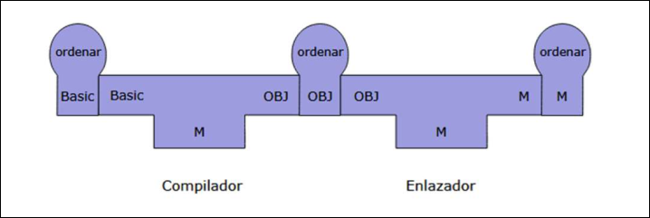
Compilador Cruzado
Permite desarrollar compiladores para maquinas diferentes a la de desarrollo.
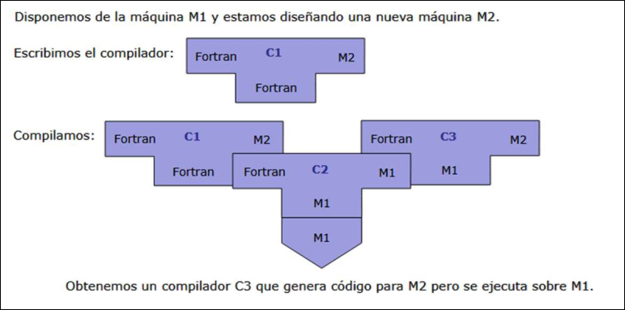
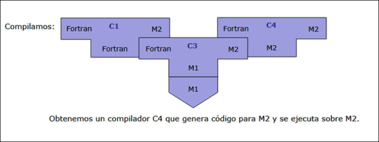
Bootstrapping
Se basa en utilizar múltiples etapas de compilación para mejorar la expresividad y rendimiento de un compilador. Una forma de bootstrapping consiste en construir el compilador de un lenguaje a partir de una versión reducida del propio lenguaje, de modo que se obtienen sucesivas versiones que amplían y mejoran un lenguaje de programación determinado.
Un autocompilador es aquel que es capaz de compilar su propio código fuente. Las mayores ventajas del bootstraping se obtienen cuando un compilador se escribe en el mismo lenguaje que compila.
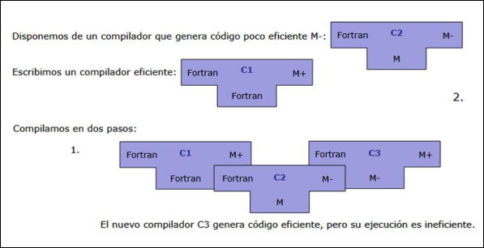
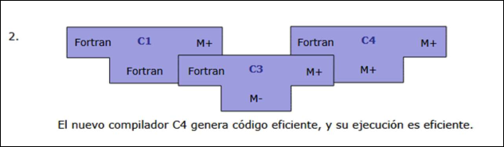
Compilador-Intérprete
Es la unión del intérprete y la plataforma de ejecución recibe el nombre de maquina virtual.
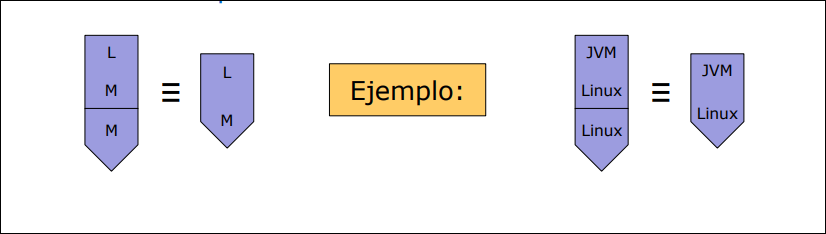
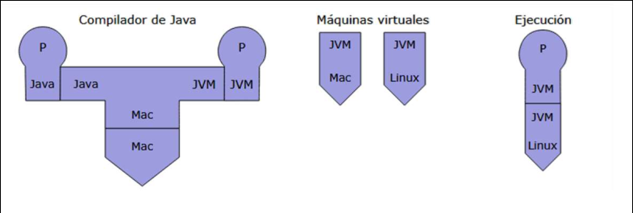
1.6 Aplicaciones
- Edición de textos con formato. Por ejemplo, LaTeX.
- Reconocimiento de patrones: tanto de texto, como reconocimiento del habla o visión por computadora.
- Desarrollo de editores de lenguajes estructurados. Por ejemplo, Xemacs. o Cálculo simbólico. Por ejemplo, MAPLE, SCILAB,…
- Diseño de circuitos integrados, mediante lenguajes como Verilog y VHDL.
- Traducción binaria. Para portar software entre plataformas.
- Simulación de arquitecturas hardware, para distintos conjuntos de datos, antes de su fabricación.